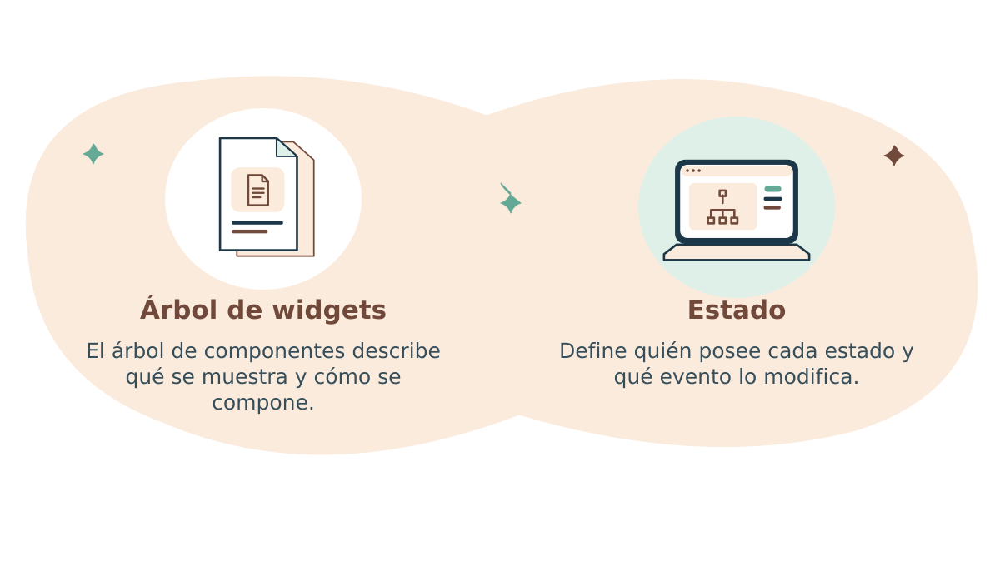
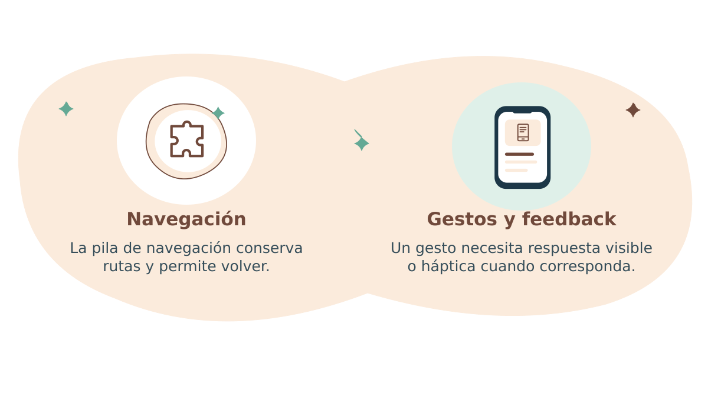
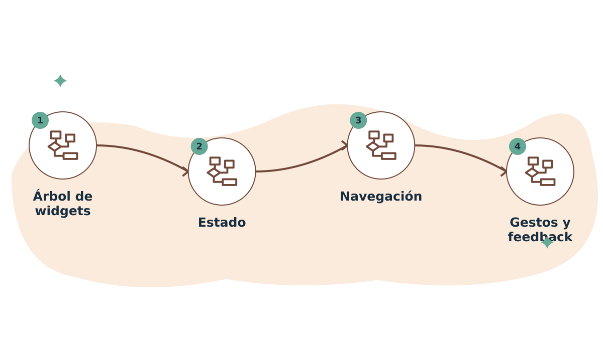

<div style="font-family:'Segoe UI',Arial,sans-serif;color:#333;line-height:1.6;max-width:100%;"><div style="background:#fff;border:1px solid #dee2e6;border-radius:15px;padding:22px;margin-bottom:20px;box-shadow:0 4px 12px rgba(0,0,0,.05);"><h2 style="color:#0056b3;margin-top:0;">Unidad 2 · Material de estudio</h2><h2 style="color:#1c3055; line-height:1.35; overflow-wrap:anywhere;">Unidad 2: Diseño de interacción móvil, gestión de estados y navegación gestual</h2>
<p style="overflow-wrap:anywhere;"></p>
<h3 style="color:#1c3055; line-height:1.35; overflow-wrap:anywhere;">Introducción</h3>
<p style="overflow-wrap:anywhere;">En esta unidad trabajarás con <strong>Árbol de widgets</strong>, <strong>Estado</strong>, <strong>Navegación</strong> y <strong>Gestos y feedback</strong>. Observa cómo se relacionan estos conceptos al resolver el caso inicial.</p>
<h3 style="color:#1c3055; line-height:1.35; overflow-wrap:anywhere;">Resultados de aprendizaje</h3>
<p style="overflow-wrap:anywhere;">Resultados curriculares: Los estudiantes emplean entornos de programación y componentes móviles para ejecutar aplicaciones básicas y realizar pruebas de funcionamiento según procedimientos indicados.</p>
<p style="overflow-wrap:anywhere;"><strong>Resultados específicos de unidad</strong></p>
<ul>
<li style="overflow-wrap:anywhere;">Implementa esquemas de navegación móvil mediante pilas (stack), pestañas inferiores (bottom navigation) y cajones laterales.</li>
<li style="overflow-wrap:anywhere;">Configura transiciones animadas y retroalimentación táctil respondiendo a gestos de deslizamiento, pellizco y pulsación prolongada.</li>
<li style="overflow-wrap:anywhere;">Aplica patrones de gestión de estado desacoplando la lógica de negocio de los componentes visuales de la interfaz.</li>
<li style="overflow-wrap:anywhere;">Preserva el estado de la aplicación ante eventos del ciclo de vida móvil (rotación de pantalla, suspensión y reanudación).</li>
</ul>
<h3 style="color:#1c3055; line-height:1.35; overflow-wrap:anywhere;">Mapa de contenidos</h3>
<div style="overflow-x:auto;max-width:100%;margin:16px 0;"><table class="table" style="width:100%;border-collapse:collapse;font-size:.9rem;">
<thead>
<tr>
<th style="padding:10px;border-bottom:1px solid #dee2e6;text-align:left;vertical-align:top;background:#eef4fb;color:#0056b3;" scope="col">Tema del PEA</th>
<th style="padding:10px;border-bottom:1px solid #dee2e6;text-align:left;vertical-align:top;background:#eef4fb;color:#0056b3;" scope="col">Subtemas</th>
</tr>
</thead>
<tbody><tr>
<td style="padding:10px;border-bottom:1px solid #dee2e6;text-align:left;vertical-align:top;">1. El árbol de componentes reactivos (Widgets con estado y sin estado). / Gestión del estado de la aplicación (State Management básico).</td>
<td style="padding:10px;border-bottom:1px solid #dee2e6;text-align:left;vertical-align:top;">2.1 El árbol de componentes reactivos (Widgets con estado y sin estado).<br>2.2 Gestión del estado de la aplicación (State Management básico).</td>
</tr>
<tr>
<td style="padding:10px;border-bottom:1px solid #dee2e6;text-align:left;vertical-align:top;">2. Navegación y enrutamiento entre pantallas (Navigation Stack, pestañas y cajón lateral). / Manejo de gestos táctiles (Tap, Long Press, Pan, Swipe) y retroalimentación háptica/visual.</td>
<td style="padding:10px;border-bottom:1px solid #dee2e6;text-align:left;vertical-align:top;">2.3 Navegación y enrutamiento entre pantallas (Navigation Stack, pestañas y cajón lateral).<br>2.4 Manejo de gestos táctiles (Tap, Long Press, Pan, Swipe) y retroalimentación háptica/visual.</td>
</tr>
</tbody></table>
</div><h3 style="color:#1c3055; line-height:1.35; overflow-wrap:anywhere;">Caso inicial</h3>
<p style="overflow-wrap:anywhere;">La aplicación ficticia <em>AgroConecta Rutas</em> apoya a transportistas rurales en el registro de entregas agrícolas. En su versión actual, cada vez que el conductor cambia de pestaña o gira el teléfono horizontalmente en la cabina, el contador de cajas y las notas del envío se reinician a cero, y al intentar deslizar una tarjeta hacia la izquierda para marcar una entrega completada, el gesto entra en conflicto con el desplazamiento vertical sin ofrecer confirmación visual ni háptica. Usted implementará una arquitectura limpia de navegación, estado reactivo persistente ante rotación y manejo seguro de gestos.</p>
<h3 style="color:#1c3055; line-height:1.35; overflow-wrap:anywhere;">Fundamentos conceptuales</h3>
<p style="overflow-wrap:anywhere;">En los marcos modernos multiplataforma, la interfaz se organiza como un <strong>árbol jerárquico de componentes reactivos</strong>. Un <strong>componente sin estado</strong> (<em>Stateless</em>) únicamente dibuja la vista a partir de los parámetros que recibe y no cambia por sí mismo, resultando ideal para encabezados, tarjetas fijas o etiquetas. En cambio, un <strong>componente con estado</strong> (<em>Stateful</em>) administra datos dinámicos que cambian mientras la persona interactúa (por ejemplo, un contador en el carrito, una casilla marcada o un formulario activo) y solicita reconstruir únicamente la parte necesaria de la pantalla cuando ese estado cambia.</p>
<p style="overflow-wrap:anywhere;">Para evitar aplicaciones difíciles de mantener, el código no debe mezclar reglas de negocio (como calcular descuentos o validar datos) dentro de los archivos visuales de cada botón. Aplicar una <strong>gestión ordenada del estado</strong> desacopla los datos compartidos en un controlador o proveedor sencillo, lo que además resulta esencial para sobrevivir al <strong>ciclo de vida móvil</strong>: cuando el usuario gira la pantalla o recibe una llamada telefónica que suspende temporalmente la aplicación, el sistema puede reconstruir la vista; si el estado está bien administrado, el usuario no perderá lo que estaba escribiendo.</p>
<p style="overflow-wrap:anywhere;">Respecto a la <strong>navegación móvil</strong>, tres patrones ordenan casi cualquier aplicación: la <strong>pila de navegación</strong> (<em>stack</em>, donde cada nueva pantalla se apila sobre la anterior y permite retroceder con orden), las <strong>pestañas inferiores</strong> (<em>bottom navigation</em>, ideales para entre tres y cinco secciones principales alcanzables con el pulgar) y el <strong>cajón lateral</strong> (<em>drawer</em>, útil para configuraciones o secciones secundarias sin saturar la pantalla). Por último, los <strong>gestos táctiles</strong> —como <em>tap</em> (toque), <em>long press</em> (pulsación prolongada para abrir opciones contextuales), <em>pan</em> (arrastre continuo) y <em>swipe</em> (deslizamiento lateral para archivar o eliminar)— deben acompañarse de <strong>retroalimentación visual y háptica</strong> (una microvibración o animación breve) y siempre ofrecer un botón o control equivalente para quienes no descubran o no puedan ejecutar el gesto.</p>
<h3 style="color:#1c3055; line-height:1.35; overflow-wrap:anywhere;">Tema 1: El árbol de componentes reactivos (Widgets con estado y sin estado). / Gestión del estado de la aplicación (State Management básico).</h3>
<p style="overflow-wrap:anywhere;"></p>
<h4 style="color:#1c3055; line-height:1.35; overflow-wrap:anywhere;">2.1 El árbol de componentes reactivos (Widgets con estado y sin estado).</h4>
<p style="overflow-wrap:anywhere;"><strong>Desarrollo técnico y aplicación.</strong> El árbol de componentes organiza composición y ciclo de vida. Un componente sin estado propio puede depender de valores que recibe; uno con estado participa en actualizaciones internas. Una reconstrucción de vista no debería ejecutar nuevamente un efecto externo sin control. Identifique qué información se conserva y qué se recalcula para evitar solicitudes o registros duplicados al cambiar la pantalla.</p>
<p style="overflow-wrap:anywhere;">El árbol de componentes describe qué se muestra y cómo se compone. Separa visualización estable de estados que cambian con datos o acciones.</p>
<h4 style="color:#1c3055; line-height:1.35; overflow-wrap:anywhere;">2.2 Gestión del estado de la aplicación (State Management básico).</h4>
<p style="overflow-wrap:anywhere;"><strong>Desarrollo técnico y aplicación.</strong> El estado local pertenece a una interacción acotada y el compartido coordina varias vistas. Elevar estado tiene sentido cuando varias partes necesitan una fuente común, no por trasladar todo a una variable global. Defina transiciones y pruebe retorno, recarga y reconstrucción. Una estrategia correcta conserva datos necesarios sin mantener indefinidamente información obsoleta o personal que la tarea ya no requiere.</p>
<p style="overflow-wrap:anywhere;">Define quién posee cada estado y qué evento lo modifica. Evita guardar la misma información en varios lugares sin coordinación.</p>
<p style="overflow-wrap:anywhere;"><strong>Contenidos de base consignados en el PEA.</strong> Contenidos de base: Principios de diseño de interacción móvil · Núcleo curricular: Diseño de interacción en dispositivos móviles</p>
<h3 style="color:#1c3055; line-height:1.35; overflow-wrap:anywhere;">Tema 2: Navegación y enrutamiento entre pantallas (Navigation Stack, pestañas y cajón lateral). / Manejo de gestos táctiles (Tap, Long Press, Pan, Swipe) y retroalimentación háptica/visual.</h3>
<p style="overflow-wrap:anywhere;"></p>
<h4 style="color:#1c3055; line-height:1.35; overflow-wrap:anywhere;">2.3 Navegación y enrutamiento entre pantallas (Navigation Stack, pestañas y cajón lateral).</h4>
<p style="overflow-wrap:anywhere;"><strong>Desarrollo técnico y aplicación.</strong> La pila de navegación representa recorridos de avance y retorno; pestañas y cajones ofrecen otras estructuras. Defina qué ocurre al volver y qué estado se recupera. Abrir una pantalla duplicada accidentalmente puede confundir historial y repetir operaciones. Pruebe también ingreso directo o una interrupción: el usuario no siempre llega siguiendo el camino ideal de la demostración.</p>
<p style="overflow-wrap:anywhere;">La pila de navegación conserva rutas y permite volver. Pestañas representan destinos principales; un menú complementa accesos secundarios.</p>
<h4 style="color:#1c3055; line-height:1.35; overflow-wrap:anywhere;">2.4 Manejo de gestos táctiles (Tap, Long Press, Pan, Swipe) y retroalimentación háptica/visual.</h4>
<p style="overflow-wrap:anywhere;"><strong>Desarrollo técnico y aplicación.</strong> Los gestos necesitan una relación comprensible entre acción y resultado. Un deslizamiento que elimina datos requiere evitar activación accidental y ofrecer la recuperación apropiada al caso. La respuesta háptica o visual complementa comunicación y no debe ser la única señal esencial. Mantenga alternativas de interacción cuando un gesto complejo impida completar la tarea a determinados usuarios.</p>
<p style="overflow-wrap:anywhere;">Un gesto necesita respuesta visible o háptica cuando corresponda. Ofrece alternativas accesibles a interacciones difíciles de descubrir.</p>
<p style="overflow-wrap:anywhere;"><strong>Contenidos de base consignados en el PEA.</strong> Contenidos de base: Aplicación del diseño de interacción en dispositivos móviles</p>
<h3 style="color:#1c3055; line-height:1.35; overflow-wrap:anywhere;">Ejemplo aplicado</h3>
<p style="overflow-wrap:anywhere;">Al añadir un favorito, actualiza el indicador y comprueba que permanezca al volver desde otra pantalla. Añade una opción accesible al gesto de deslizar.</p>
<p style="overflow-wrap:anywhere;">En una aplicación ficticia de registro de pedidos, un estudiante guarda el texto de un formulario dentro de una variable local sin persistencia mientras navega a otra pantalla secundaria para elegir una dirección; al regresar, el formulario aparece en blanco.</p>
<ul>
<li style="overflow-wrap:anywhere;"><em>Causa del fallo:</em> La navegación empujó o reemplazó la ruta destruyendo el estado local de la pantalla previa, o el controlador visual no preservó los datos ante reconstrucciones.</li>
<li style="overflow-wrap:anywhere;"><em>Solución aplicada:</em> Se eleva el estado del formulario a un gestor compartido o controlador de estado separado de la vista, se pasa y retorna explícitamente el parámetro seleccionado en la pila de navegación y se prueba rotando la pantalla en el emulador para confirmar que ningún dato se pierde.</li>
</ul>
<h3 style="color:#1c3055; line-height:1.35; overflow-wrap:anywhere;">Profundización técnica de la unidad</h3>
<h4 style="color:#1c3055; line-height:1.35; overflow-wrap:anywhere;">Estado reactivo y navegación coherente</h4>
<p style="overflow-wrap:anywhere;">La interfaz representa un estado; una acción produce una transición y la vista se actualiza. Distinga estado local de un componente, estado compartido y datos persistentes. Volver a dibujar la pantalla no debería repetir una operación externa sin control, como una compra o una solicitud costosa.</p>
<p style="overflow-wrap:anywhere;"><strong>Ejemplo resuelto.</strong> El formulario conserva un borrador mientras el usuario abre una pantalla de ayuda. Si el estado vive solo en un componente que se destruye al navegar, el borrador puede perderse. La solución depende del requisito: mantener el componente, elevar el estado o persistir el borrador. Guardarlo indefinidamente sin informar también puede ser inadecuado.</p>
<p style="overflow-wrap:anywhere;">La navegación necesita rutas identificables, comportamiento de volver y recuperación de estados. Un gesto debe tener una alternativa accesible cuando sea necesario. En operaciones asíncronas, evite actualizar componentes descartados o aplicar resultados de una consulta anterior sobre una pantalla nueva. <strong>Reflexión:</strong> ¿qué información debería sobrevivir a un cambio de orientación y cuál podría restablecerse sin perjuicio?</p>
<h4 style="color:#1c3055; line-height:1.35; overflow-wrap:anywhere;">Datos y condiciones para estudiar el caso en detalle</h4>
<p style="overflow-wrap:anywhere;">La aplicación ficticia <em>AgroConecta Rutas</em> (caso simulado exclusivamente con fines formativos) ayuda a transportistas agrícolas a gestionar sus entregas diarias en campo. En su prototipo anterior, los usuarios reportaron tres fallas graves de experiencia de usuario (UX) e interacción:</p>
<ol>
<li style="overflow-wrap:anywhere;"><strong>Pérdida de estado al navegar o rotar:</strong> Si el conductor empieza a llenar el formulario de entrega en la segunda pestaña y gira el teléfono en el soporte del camión o entra brevemente a consultar un detalle de pedido en otra pantalla, todos los campos escritos se borran al regresar.</li>
<li style="overflow-wrap:anywhere;"><strong>Paso desordenado entre pantallas:</strong> La lista de rutas pendientes no envía el identificador ni el objeto del pedido seleccionado hacia la pantalla de detalle, mostrando datos fijos repetidos.</li>
<li style="overflow-wrap:anywhere;"><strong>Gestos ambiguos sin respaldo:</strong> Se intentó usar un gesto de deslizamiento lateral (<em>swipe</em>) sobre las tarjetas de entrega para marcarlas como completadas, pero el gesto choca con el desplazamiento vertical de la lista, no ofrece confirmación visual ni vibración háptica y no existe un botón alternativo visible para usuarios que prefieren tocar una opción explícita.</li>
</ol>
<p style="overflow-wrap:anywhere;">Su tarea durante las semanas 3 y 4 consiste en reconstruir la arquitectura de navegación y estado de <em>AgroConecta Rutas</em>, resolver los tres problemas anteriores y grabar una demostración clara en video asincrónico mostrando el flujo completo en el emulador o dispositivo.</p>
<h4 style="color:#1c3055; line-height:1.35; overflow-wrap:anywhere;">Desarrollo del procedimiento y controles del caso</h4>
<p style="overflow-wrap:anywhere;">El siguiente recorrido desarrolla la misma práctica de esta unidad. Se estudia junto con sus datos y controles; las consignas y los criterios de entrega se conservan en el apartado de actividades y en la guía enlazada.</p>
<ol>
<li style="overflow-wrap:anywhere;"><strong>Árbol de componentes y gestor de estado desacoplado (semana 3):</strong> Separe explícitamente los componentes visuales puros (tarjetas de pedido, encabezados) de la lógica de negocio creando un controlador o gestor de estado sencillo (por ejemplo, <em>ChangeNotifier</em> / <em>Provider</em> en Flutter o <em>Context</em> / <em>Reducer</em> en React Native) que almacene la lista de entregas y el borrador activo del formulario de registro.</li>
<li style="overflow-wrap:anywhere;"><strong>Arquitectura de navegación multipatrón:</strong> Implemente tres pestañas inferiores (<em>Pendientes</em>, <em>Registrar entrega</em> e <em>Historial</em>) dentro de un contenedor principal con cajón lateral (<em>Drawer</em>) para preferencias del conductor (como tipo de unidad o filtro de zona). Conecte la lista de <em>Pendientes</em> con una pantalla de <em>Detalle de entrega</em> mediante pila de navegación (<em>navigation stack</em>) pasando el identificador del pedido como parámetro y devolviendo la actualización al regresar.</li>
<li style="overflow-wrap:anywhere;"><strong>Gestos táctiles con retroalimentación y alternativa accesible (semana 4):</strong> Agregue manejo intencionado de gestos táctiles —por ejemplo, toque simple (<em>tap</em>) para abrir el detalle, pulsación prolongada (<em>long press</em>) o deslizamiento controlado (<em>swipe</em> / <em>Dismissible</em> con confirmación) para marcar o deshacer una entrega— acompañando la acción con retroalimentación visual inmediata (cambio de estado o barra de aviso <em>SnackBar</em> con opción <em>Deshacer</em>) y retroalimentación háptica (<em>HapticFeedback</em>), manteniendo siempre un botón accesible equivalente dentro del detalle para no depender exclusivamente del gesto.</li>
<li style="overflow-wrap:anywhere;"><strong>Pruebas de ciclo de vida y condiciones límite:</strong> Ejecute la aplicación en el emulador o dispositivo y verifique tres escenarios concretos: (a) flujo normal recorriendo las tres pestañas, el cajón lateral y la pantalla de detalle con paso correcto de parámetros; (b) <strong>condición límite de ciclo de vida</strong>: escriba datos parciales en <em>Registrar entrega</em>, cambie de pestaña, rote la pantalla entre vertical y horizontal (y suspenda/reanude la aplicación en el emulador) verificando que ningún dato ni contador se pierda; y (c) <strong>condición de error</strong>: intente guardar una entrega sin datos válidos o deshaga un deslizamiento accidental comprobando que el estado se recupere con claridad.</li>
<li style="overflow-wrap:anywhere;"><strong>Inspección con herramientas de depuración:</strong> Abra Flutter DevTools o React Native Debugger para verificar que los cambios de estado reconstruyan únicamente los componentes necesarios y registre una captura del árbol de componentes o inspector de estado.</li>
<li style="overflow-wrap:anywhere;"><strong>Demostración en video asincrónico e integración final:</strong> Grabe una <strong>demostración en video de la navegación de la aplicación</strong> (entre 2 y 4 minutos) narrando brevemente mientras interactúa en el emulador: muestre las pestañas inferiores, el cajón lateral, el paso de parámetros al detalle, la respuesta visual/háptica ante gestos y la prueba real de rotación de pantalla conservando el estado del formulario. Suba código, capturas de depuración y video (o enlace reproducible) en una única entrega en Moodle.</li>
</ol>
<p style="overflow-wrap:anywhere;"><a href="https://docs.google.com/document/d/1mZ2uCu7CzIqred5M5ck8Unn1SoU5ZJPZ/edit?usp=drivesdk&amp;ouid=103668893019291892783&amp;rtpof=true&amp;sd=true" target="_self">Fuente del caso y del procedimiento: Guía de Prácticas, práctica 2</a>. Las explicaciones y los ejemplos resueltos de esta profundización son desarrollo didáctico de los contenidos de la unidad; sus cifras de ejemplo no sustituyen las del caso de la guía.</p>
<h3 style="color:#1c3055; line-height:1.35; overflow-wrap:anywhere;">Esquema de aplicación</h3>
<p style="overflow-wrap:anywhere;"></p>
<h3 style="color:#1c3055; line-height:1.35; overflow-wrap:anywhere;">Actividades de aprendizaje</h3>
<ol>
<li style="overflow-wrap:anywhere;"><p style="overflow-wrap:anywhere;"><strong>Trabajo Autónomo:</strong> Construye una aplicación móvil funcional con flujo completo de navegación, gestión desacoplada de estado y captura de eventos gestuales. Acompáñala de un documento único de análisis y fundamentación. Explica el árbol de componentes reactivos, la gestión del estado, la pila de navegación, las pestañas inferiores, el cajón lateral y los gestos táctiles. Documenta las pruebas del ciclo de vida y reúne los resultados en una única versión consolidada en Moodle. </p>
</li>
<li style="overflow-wrap:anywhere;"><p style="overflow-wrap:anywhere;"><strong>Trabajo Práctico-Experimental de la Unidad 2 (100 % asincrónico):</strong> Taller de navegación móvil centrado en implementar una arquitectura de navegación con pestañas inferiores, paso de parámetros entre pantallas, gestos táctiles con retroalimentación háptica o visual, preservación de estado ante rotación y una <strong>demostración en video asincrónico de la navegación de la aplicación entregada en Moodle</strong>. El procedimiento paso a paso figura en la Práctica 2 de la Guía de Prácticas y se entrega.</p>
</li>
</ol>
<h3 style="color:#1c3055; line-height:1.35; overflow-wrap:anywhere;">Cierre de la unidad</h3>
<p style="overflow-wrap:anywhere;"><strong>Síntesis aplicada.</strong> Implementar la arquitectura de componentes reactivos y navegación gestual en un framework de desarrollo móvil multiplataforma.</p>
<p style="overflow-wrap:anywhere;"><strong>Para reflexionar.</strong> ¿Qué estado debería conservarse cuando la persona vuelve a la lista?</p>
<h3 style="color:#1c3055; line-height:1.35; overflow-wrap:anywhere;">Lecturas asignadas</h3>
<p style="overflow-wrap:anywhere;">Referencias y localizadores consignados en el PEA.</p>
<ul>
<li style="overflow-wrap:anywhere;"><strong>Básica.</strong> Google Flutter Documentation Team (2024). <em>Flutter &amp; Dart Official Documentation: Building Beautiful Native Apps</em>. Google Open Resources. <a href="https://docs.flutter.dev/" target="_self">https://docs.flutter.dev/</a> Lectura indicada en el PEA: Apartados relacionados con los contenidos de la asignatura.</li>
<li style="overflow-wrap:anywhere;"><strong>Básica.</strong> Google LLC (2024). <em>Material Design 3: The Next Generation of Material for Mobile Interfaces</em>. <a href="https://m3.material.io/" target="_self">https://m3.material.io/</a> Lectura indicada en el PEA: Apartados relacionados con los contenidos de la asignatura.</li>
<li style="overflow-wrap:anywhere;"><strong>Básica.</strong> Apple Inc. (2024). <em>Human Interface Guidelines: Design for iOS, iPadOS and Multi-touch Interaction</em>. Apple Developer. <a href="https://developer.apple.com/design/human-interface-guidelines/" target="_self">https://developer.apple.com/design/human-interface-guidelines/</a> Lectura indicada en el PEA: Apartados relacionados con los contenidos de la asignatura.</li>
<li style="overflow-wrap:anywhere;"><strong>Complementaria.</strong> Soegaard, M. y Dam, R. F. (2024). <em>The Encyclopedia of Human-Computer Interaction</em> (2.ª ed.). Interaction Design Foundation. Lectura indicada en el PEA: Apartados relacionados con los contenidos de la asignatura.</li>
<li style="overflow-wrap:anywhere;"><strong>Complementaria.</strong> Meta Open Source (2024). <em>React Native: Learn the Basics of Cross-Platform Mobile Development</em>. <a href="https://reactnative.dev/docs/getting-started" target="_self">https://reactnative.dev/docs/getting-started</a> Lectura indicada en el PEA: Apartados relacionados con los contenidos de la asignatura.</li>
<li style="overflow-wrap:anywhere;"><strong>Complementaria.</strong> Lidwell, W., Holden, K. y Butler, J. (2023). <em>Universal Principles of Design</em> (3.ª ed. actualizada y ampliada). Rockport Publishers. Lectura indicada en el PEA: Apartados relacionados con los contenidos de la asignatura.</li>
</ul>
</div></div>
